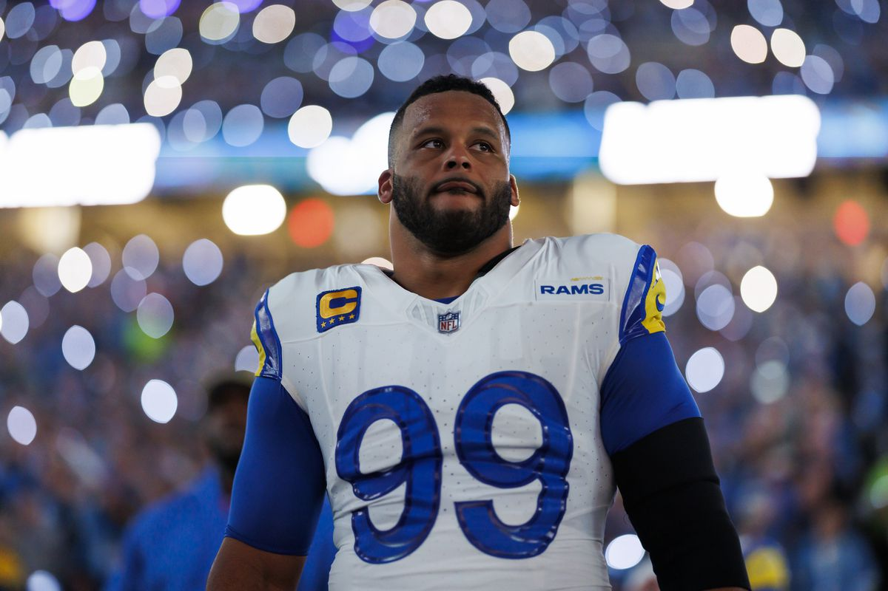
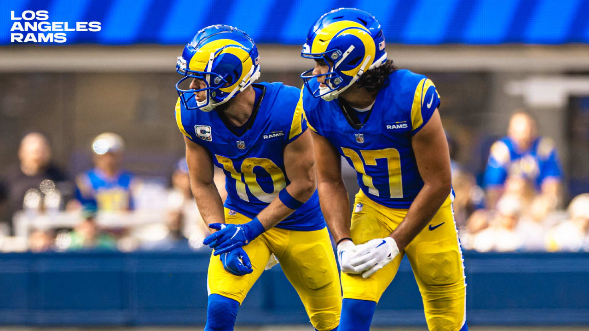

Favorite Team

My favorite football team is the Los Angeles Rams. I am a Rams fan because of my dad, he is from LA and he grew up a Rams fan before they moved to St. Louis.
Favorite Players
 My favorite players right now on the Rams are Cooper Kupp and Puka Nacua. Aaron Donald just retired and I'm still sad about that but, he was my favorite player on the Rams when he was playing.
Some other notable players that I like are Kyren Williams and Matthew Stafford.
Stadium
The Rams have played at Sofi Stadium since 2020. It is tied as the newest NFL stadium with the Raiders Stadium. Both opened in 2020.
Favorite Sport
Football comes in last when it comes to my favorite sports but it's close with Basketball. I haven't watched as much football when it comes to the other sports because the Rams weren't back in LA until 2016.